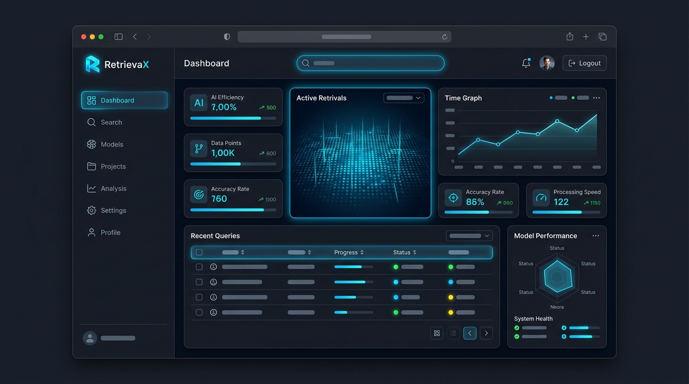
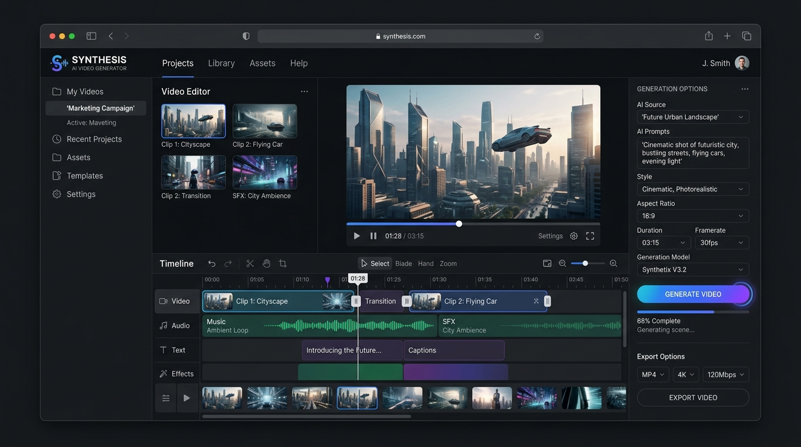

RetrievaX
A sleek, modern web dashboard for monitoring AI application retrieval performance and active analytics.
View RetrievaX project on GitHub
A sleek, modern web dashboard for monitoring AI application retrieval performance and active analytics.
View RetrievaX project on GitHub
An experimental video timeline application interface for prompt-to-video synthesis using generative machine learning models.
View AI Video Generator project on GitHub